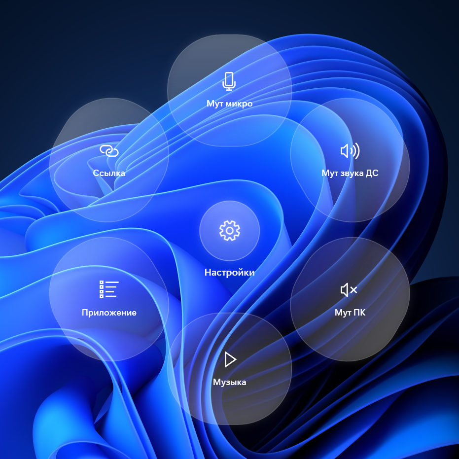
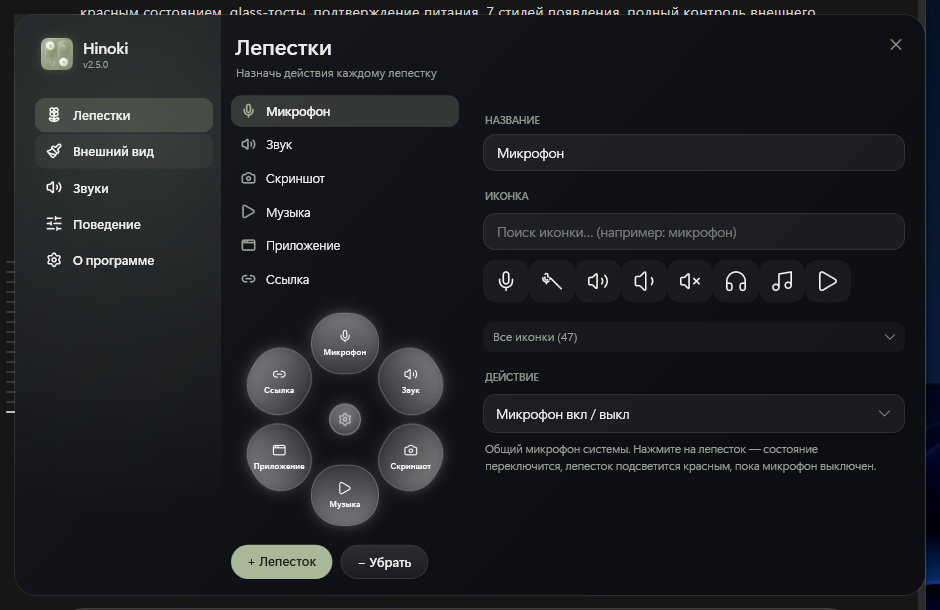
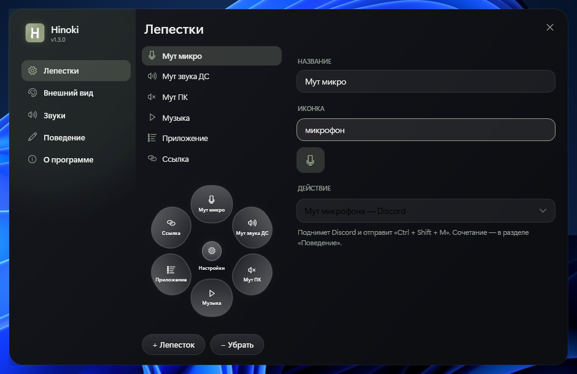
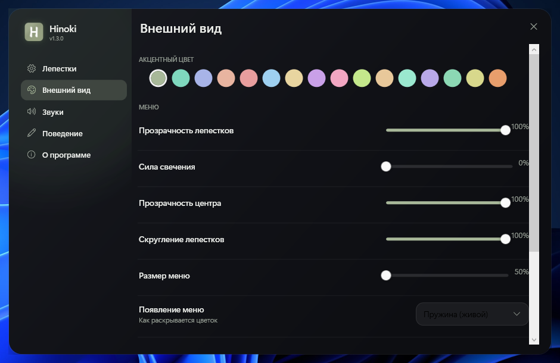

29 действий
Микрофон и звук ПК вкл/выкл, треки, скриншоты экрана и окна, блокировка, сон, папки, эмодзи — 38 действий.
Трей-утилита для Windows 10 / 11 · v2.6
Средняя кнопка мыши — распускается стеклянный цветок. 38 действий, звуки, 48 иконок с поиском, автозакрытие. Настройки — прямо в центре цветка.
Без установки · меньше 1 МБ · v2.6.0 · бесплатно и открыто
Возможности
Каждому лепестку — своё действие. Комбинируйте как удобно: мут рядом с музыкой, Steam рядом с работой.
Микрофон и звук ПК вкл/выкл, треки, скриншоты экрана и окна, блокировка, сон, папки, эмодзи — 38 действий.
Любой .exe, ярлык или steam://-ссылка. Аргументы запуска настраиваются.
Мягкий «блум» при раскрытии, тик при выборе. Громкость и каждый звук — отдельно, с прослушиванием.
Палитра акцентов, прозрачность лепестков и центра, свечение, светлое стекло, хоткей, анимации.
Как работает
Меньше 1 МБ, без установки. Запустили — он уже в трее.
Клик по шестерёнке — настройки. Лепесткам — действия, иконки, цвета. Всё меняется на лету.
В любой момент, в любом приложении — средняя кнопка мыши распускает цветок там, где курсор. Esc или клик мимо — закрывается.
Взгляд
Размытие фона, мягкое свечение, пружинная анимация раскрытия. Ничего лишнего — как в хорошем храме из хиноки.




Скачайте Hinoki — и через десять секунд у вас будет самый красивый мут в Discord.